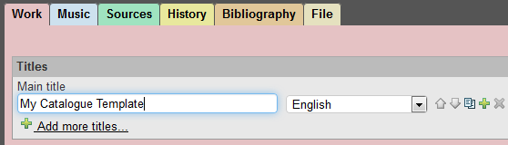
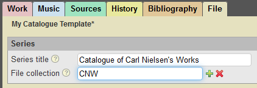
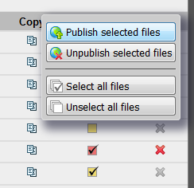

Recommended workflow
This page described a workflow intended to make working with MerMEId as efficient as possible.
MerMEId is designed for editing and storing metadata in MEI files; usually each file describes one musical work. The list shown when entering MerMEId is basically a list of the MEI files stored in the database at any time.
Assuming that you want to create a number of files all belonging to the same project or catalogue, we recommend the following workflow for creating the files and entering the data.
Creating a template file
Usually all of the files in a catalogue will have a certain amount of information in common, namely the technical and administrative information and the name of the project/catalogue they belong to (see below). To avoid having to enter this information every time you create a new file, we recommend that you create a file containing only the shared information and make a copy when starting a new file instead of starting with an empty file.
- To create a template file, create a new, empty file (see MerMEId basics).
At the Work tab, enter a name for your template in the main title field. This is the title that will appear in the list of files.
If you are creating a catalogue of works of a single composer, you may also want to add the composer's name in the 'Persons' section.
Save the file .
.
 -
Switch to the File tab and enter the name of the catalogue (or project) in the 'Series title' field.
If you want MerMEId to be able to organize your files according to catalogue and to recognize certain identifiers as catalogue works numbers (just like 'BWV 1063' and 'KV 626' are identifiers for works in the Bach and Mozart catalogues, respectively), add the desired prefix of your work numbers (equivalent to 'BWV' or 'KV') in the 'File collection' field.
 -
Add any other shared information as appropriate, such as the name and address of your institution, use restrictions, and
project description. Save your work and return to the file list . You will notice that the collection name now appears
in the drop-down list of available collections.

Starting a new file from template
- Clone the template:
- Make a copy of your template file by clicking the copy button .
- Open the file for editing by clicking the edit button
 .
.

- Make a copy of your template file by clicking the copy button .
- Change the main title.
-
If your catalogue/project uses work numbers, add the catalogue prefix (that is, the name of the MerMEId file collection) as the
list name in the 'Identification' section. Add the work number in the 'No.' field. You can add any other identifying numbers also,
such as opus numbers or corresponding work numbers in other catalogues.

If the list name matches the file collection name given at the File tab, MerMEId will treat the number as the work number (relevant when sorting files by work number, for instance).

Content editing
- Add any data you want to the file (see tutorials and other help pages on how to use the editor and how to enter certain types of information).
- To verify or proofread your data, use the HTML preview by clicking the document button
 to generate a human-readable HTML page from the file.
to generate a human-readable HTML page from the file.
Publishing to an online catalogue
If you are creating a public online catalogue you will want to publish your data a some point. In MerMEId's list view, files can be marked for publishing and 'published' (the meaning of the check box colours is explained as part of the MerMEId basics.
This process allows you to keep your files private until you consider them ready for publication or re-publication. MerMEId also lets you 'unpublish' (withdraw) published files from the public catalogue without deleting them from your database.
The actual effect – if any – of publishing your files depends on the setup of your system as explained in the MerMEId basics and the Frequently Asked Questions.
Creating a printed catalogue
If you want to create a printed catalogue from your data, MerMEId can assist you some of the way. There is a tool for outputting all files of a file collection (or portions of a collection; or all files in the database) as a single, potentially very large, HTML document.
The use of the tool is explained in the manual's section on Displaying or printing multiple (or all) records.
By default, MerMEId will output the almost the same way as in the HTML preview only improved for printing (by unfolding all hidden sections, for instance), but you can specify another XSL transformation to customize the results for your needs.
The remaining steps to prepare a print catalogue are up to you. For the printed catalogue of Carl Nielsen's works, we chose a quick but dirty approach: we simply copied the resulting HTML into a Word document which was imported into InDesign for the final layout. A more elegant way would be to write a transformation from MEI to LaTeX, for instance.